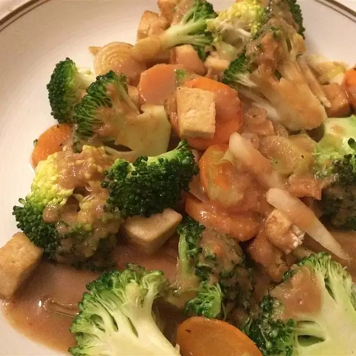

Tofu Stir Fry

Description
This recipe describes how to make tofu stir fry. It is made in a skillet. It makes 4 servings.
Ingredients
- 1 tablespoon vegetable oil
- ½ medium onion, sliced
- 2 cloves garlic, finely chopped
- 1 tablespoon fresh ginger root, finely chopped
- 1 (16 ounce) package tofu, drained and cut into cubes
- ½ cup water
- 4 tablespoons rice wine vinegar
- 2 tablespoons honey
- 2 tablespoons soy sauce
- 2 teaspoons cornstarch dissolved in
- 2 tablespoons water
- 1 carrot, peeled and sliced
- 1 green bell pepper, seeded and cut into strips
- 1 cup baby corn, drained and cut into pieces
- 1 small head bok choy, chopped
- 2 cups fresh mushrooms, chopped
- 1¼ cups bean sprouts
- 1 cup bamboo shoots, drained and chopped
- ½ teaspoon crushed red pepper
- 2 medium green onions, thinly sliced diagonally
Steps
- In a large skillet, heat oil over medium-high heat. Stir in onions and cook for one minute. Stir in garlic and ginger, and cook for 30 seconds. Stir in tofu, and cook until golden brown
- Stir in carrots, bell pepper and baby corn, cooking for 2 minutes. Stir in bok choy, mushrooms, bean sprouts, bamboo shoots, and crushed red pepper, and heat through. Remove from heat.
- In a small saucepan, combine water, rice wine vinegar, honey, and soy sauce, and bring to a simmer. Cook for two minutes, then stir in cornstarch and water mixture. Simmer until sauce thickens. Pour sauce over vegetables and tofu. Garnish with scallions.